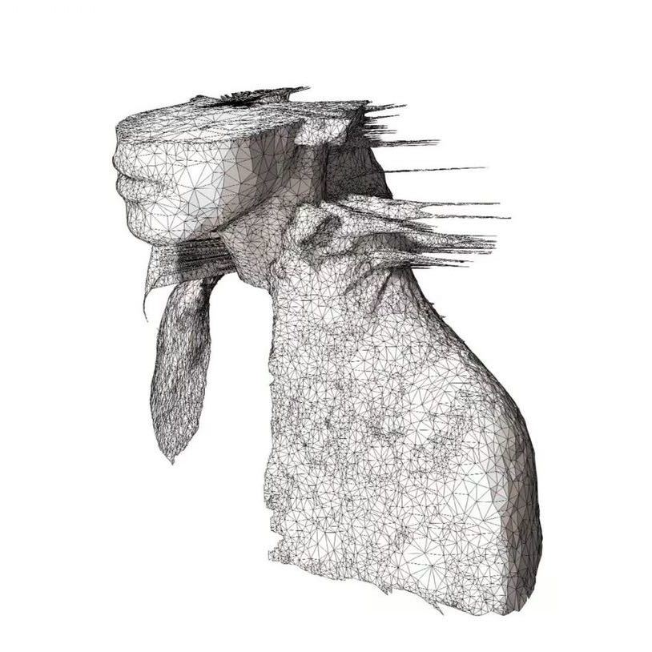
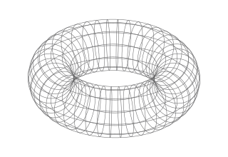

A PERSONAL COLLECTION

关于学习，关于创造。
持续学习。
认真创造。
AI 学习笔记、阶段报告和项目实践。记录思考，也记录把想法实现的过程。
一个持续更新的个人空间预览版 · 内容示例
LEARN / 01
IDEAS IN PROGRESS001

从思考，到实践。↗
EXPLORE
从这里开始
RECENT
A PERSONAL COLLECTION

关于学习，关于创造。
AI 学习笔记、阶段报告和项目实践。记录思考，也记录把想法实现的过程。
一个持续更新的个人空间预览版 · 内容示例

EXPLORE
RECENT